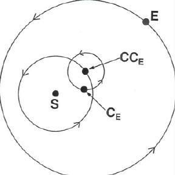

Figure 2
Copernican Complexity. To account for the observation of the sun, the Earth revolves around a central point CE, which in turn revolves around the point CCE, which in turn revoves around the sun.